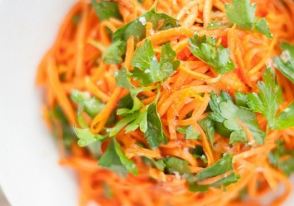
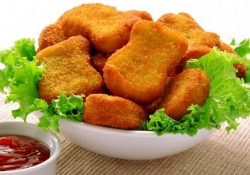

ﺳﻠﻄﺔ اﻟﺨﯿﺎر واﻟﺠﺰر
المقادير
ﺳﻜﺮ , رﺷﺔ ﻣﻠﺢ , ﺣﺴﺐ اﻟﺮﻏﺒﺔ ﻣﺎء , 1/4 ﻛﻮب ﺧﻞ أﺑﯿﺾ , 1 ﻣﻠﻌﻘﺔ ﻛﺒﯿﺮة ﺑﺼﻞ ﻣﻔﺮوم ﻣﺮﺑﻌﺎت , 1 ﺣﺒﺔ ﺟﺰر ﻣﻘﻄﻊ اﻧﺼﺎف , 3 ﺣﺒﺔ ﺧﯿﺎر ﺷﺮاﺋﺢ , 3 ﺣﺒﺔ
طريقة التحضير
ﻗﻮﻣﻲ ﺑﻮﺿﻊ اﻟﺨﯿﺎر واﻟﺠﺰر واﻟﺒﺼﻞ ﻓﻲ وﻋﺎء، ﺛﻢ ﺿﻌﻲ اﻟﺨﻞ واﻟﻤﺎء ﻓﻲ زﺑﺪﻳﺔ ﺻﻐﯿﺮة، ﺑﻌﺪ ذﻟﻚ أﺿﯿﻔﻲ اﻟﺴﻜﺮ واﻟﻤﻠﺢ ﺣﺘﻰ ﻳﺬاب ﻓﯿﻪ، وﻳﻀﺎف اﻟﻤﺎء واﻟﺨﻞ إﻟﻰ اﻟﺴﻠﻄﺔ. ﺑﺎﻟﮫﻨﺎ واﻟﺸﻔﺎ
اﻟﻤﺎﻓﻦ اﻷﻣﺮﻳﻜﻲ ﺑﺎﻟﻠﺤﻢ واﻟﺠﺒﻦ
المقادير
ﻛﺮﻳﻤﺔ ﺧﻔﻖ ﺧﺎﻟﯿﺔ اﻟﺪﺳﻢ, 0.50 ﻛﻮب ﺑﯿﺎض اﻟﺒﯿﺾ , 4 ﺣﺒﺎت طﻤﺎطﻢ , 12 ﺣﺒﺔ ﺻﻐﯿﺮة ﻟﺤﻢ ُﻣﺪﺧﻦ , 2 ﺷﺮﻳﺤﺔ ﺟﻼش , 0.50 ﻛﯿﻠﻮ ﻣﻠﺢ , 0.25 ﻣﻠﻌﻘﺔ ﺻﻐﯿﺮة ﺟﺒﻦ ﺷﯿﺪر ﻣﺒﺸﻮر, 0.50 ﻛﻮب
طريقة التحضير
اﻟﺠﻼش إﻟﻰ ﻧﺼﻔﯿﻦ ﺑﺎﻟﻌﺮض. - ﻗﻮﻣﻲ ﺑﻔﺮد ﻛﻞ ﺷﺮﻳﺤﺘﯿﻦ ﻣﻦ اﻟﺠﻼش - أﻧﺜﺮي اﻟﻘﻠﯿﻞ ﻣﻦ اﻟﺰﻳﺖ ﻋﻠﻰ رﻗﺎﺋﻖ اﻟﺠﻼش. - ﻗﻄﻌﻲ ﻛﻞ ورﻗﺔ ﻣﻦ ﻓﻲ ﻗﻮاﻟﺐ اﻟﻤﺎﻓﻦ وﺗﺴﻮى ﺟﯿﺪاً ﻣﻦ اﻟﺠﻮاﻧﺐ. - ﻗﻄﻌﻲ ﺷﺮاﺋﺢ اﻟﻠﺤﻢ اﻟﻤﺪﺧﻦ ﺟﯿﺪاً وأﺿﯿﻔﻲ إﻟﯿﻪ اﻟﺒﻘﺪوﻧﺲ اﻟﻤﻔﺮوم واﻟﻄﻤﺎطﻢ اﻟﻤﻘﻄﻌﺔ ﻗﻜﻊ اﻟﺒﯿﺾ ﻣﻊ اﻟﻜﺮﻳﻤﺔ واﻟﻤﻠﺢ ﺑﺎﻟﻤﻀﺮب اﻟﯿﺪوي ﻓﻲ وﻋﺎء ﻣﻨﺎﺳﺐ. - إﺳﻜﺒﻲ ﺻﻐﯿﺮة، ﺛﻢ ﻗﻮﻣﻲ ﺑﺘﻮزﻳﻊ اﻟﺨﻠﯿﻂ ﻋﻠﻰ اﻟﻘﻮاﻟﺐ. - ﻗﻮﻣﻲ ﺑﺨﻔﻖ ﺑﯿﺎض ﻋﻠﻰ اﻟﺴﻄﺢ. - اﺧﺒﺰي ﻗﻮاﻟﺐ اﻟﻤﺎﻓﻦ ﻓﻰ ﻓﺮن ﻣﺴﺨﻦ ﻣﺴﺒﻘﺎً ﻋﻠﻰ ﺧﻠﯿﻂ اﻟﻜﺮﻳﻤﺔ ﺑﺎﻟﺘﺴﺎوي داﺧﻞ ﻗﻮاﻟﺐ اﻟﻤﺎﻓﻦ، ﺛﻢ ﺿﻌﻲ اﻟﺠﺒﻦ اﻟﺸﯿﺪر درﺟﺔ ﺣﺮارة ﻣﺘﻮﺳﻄﺔ ﻟﻤﺪة رﺑﻊ ﺳﺎﻋﺔ وﺣﺘﻰ ﻳﺘﻤﺎﺳﻚ اﻟﺤﺸﻮ وﻳﺨﺒﺰ اﻟﻤﺰﻳﺞ ﺟﯿﺪ
ﻧﺎﺟﺘﺲ اﻟﺴﻤﻚ
المقادير
ﻓﺘﺎت اﻟﺨﺒﺰ , 3/4 ﻛﻮب اﻟﻤﻠﺢ , 2 ﻣﻠﻌﻘﺔ ﺷﺮاﺋﺢ اﻟﺴﻤﻚ اﻟﻤﺠﻤﺪ , 20 ﻗﻄﻌﺔ ﻣﺎﻳﻮﻧﯿﺰ ﻗﻠﯿﻞ اﻟﺪﺳﻢ , 1/3 ﻛﻮب
طريقة التحضير
ﻳﺴﺨﻦ اﻟﻔﺮن ﻓﻲ درﺟﺔ ﺣﺮارة 500 درﺟﺔ . ﻳﺨﻠﻂ ﻛﻞ ﻣﻦ ﻓﺘﺎت اﻟﺨﺒﺰ و اﻟﻤﻠﺢ ﻓﻲ وﻋﺎء ﻛﺒﯿﺮ . إﺿﯿﻔﻲ اﻟﻤﺎﻳﻮﻧﯿﺰ ﻗﻠﯿﻞ اﻟﺪﺳﻢ ﻓﻲ وﻋﺎء ﻛﺒﯿﺮ أﺧﺮ . ﻗﻄﻌﻲ اﻟﺴﻤﻚ إﻟﻰ ﺷﺮاﺋﺢ ﺛﻢ ﻳﻨﻘﻊ ﻓﻲ ﺧﻠﯿﻂ اﻟﻤﺎﻳﻮﻧﯿﺰ ﻗﻠﯿﻞ اﻟﺪﺳﻢ ﻗﻮﻣﻲ ﺑﻮﺿﻊ ﺷﺮاﺋﺢ اﻟﺴﻤﻚ ﻓﻲ ﻓﺘﺎت اﻟﺨﺒﺰ ﺣﺘﻰ ﻳﻐﻄﯿﮫﺎ ﺟﯿﺪاً . إﺳﺘﺨﺪﻣﻲ ﻣﻘﻼة ﻣﺘﻮﺳﻄﺔ اﻟﺤﺠﻢ و رﺷﯿﮫﺎ ﺑﺎﻟﺮذاذ اﻟﻐﯿﺮ ﻻﺻﻖ ﻟﻜﻲ ﺗﻜﻮن ﺟﺎھﺰة ﻟﻄﮫﻲ اﻟﺴﻤﻚ ﻗﻮﻣﻲ ﺑﺨﺒﺰ اﻟﺴﻤﻚ ﻟﻤﺪة 15 – 13 دﻗﯿﻘﺔ او ﺣﺘﻰ ﻳﺘﺤﻮل ﻟﻮﻧﮫﺎ إﻟﻲ اﻟﺒﻨﻲ اﻟﺬھﺒﻲ ﻓﻲ درﺟﺔ ﺣﺮارة 145 درﺟﺔ ﻟﻤﺪة 15 ﺛﺎﻧﯿﺔ ﻋﻠﻰ اﻷﻗﻞ وﺗﻘﺪم ﺳﺎﺧﻨﺔ